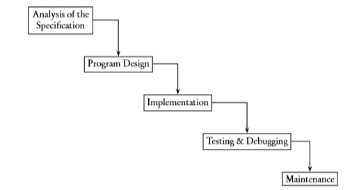
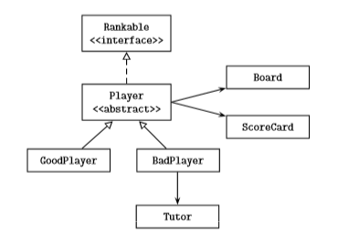

December 12th-Lesson Log

This are 5 steps for designing and coding a program.
There are 5 steps included.
The first step is to analyze the need for the clients, write a document to make sure you can understand it and also clarify with the clients to make sure all needs are satisfied.
Second step is designing the program
Third step is to implement the program
Fourth step is to testing and debugging the program. We need to input several data to make sure the program is working well. The data includes Normal data. For example if the range for the integers input is 0-100, then any integers between 0 and 100 are normal data; 0 and 100 are extreme data; integers out of range and other data types are abnormal data. Another thing we need to test is the robustness of the program. the accuracy of data output, strong enough and won't crash with invalid data enter in and won't run with invalid input are some things we need to test for the robustness of the program. And after testing, there are mainly 3 times of errors that may appear. those are compile error, run time error and logic error. compile errors are some errors that caused by invalid language use or some other things that disobey the programming language. For example, the syntax error. second type of data is run time error, it may occur when the files program needs to read doesn't exist, data out of range, zero divisions or infinite loops. the last one is a little bit different with others, the infinite loops won't stop by program itself but it won't return an output as well, we need to shut down the program in order to stop the loop. Third one is logic error, logic errors are some errors that make the program doesn't fulfill the needs. The program will keep running and it will return a result, but it doesn't do the job we want them do so.
And fifth step is maintenance, perfect the program.
MVC
MVC means Model, view and controller. The model is the basic elements in a program, like the basic object and collection.
V is View, the GUI, the panel which allows clients to use and interacts.
And C is controllers which combines the M and V, allows the program to make reaction when clients is operating on the GUI, it could allows the program to fulfill it's work. Like a Bridge game, when the clients click deals on the screen, the card will be handed into all players, that's how controllers work.
UML
UML is an important diagram to show the relationships between classes and how they work. For example

This is an example of UML diagram, but for IB requirements, we need to show all details in each class. It should includes the class name, the constructors and the information of default constructors, the methods and output. All of the information should be showed in a box and then connect the boxes with arrors to show the relationships between them.
5 steps for coding
To coding the program and design objects, there are 5 steps to do that, the books already give it to us I will print it below.
• Identify classes to be written.
• Identify behaviors (i.e., methods) for each class.
• Determine the relationships between classes.
• Write the interface (public method headers) for each class.
• Implement the methods.